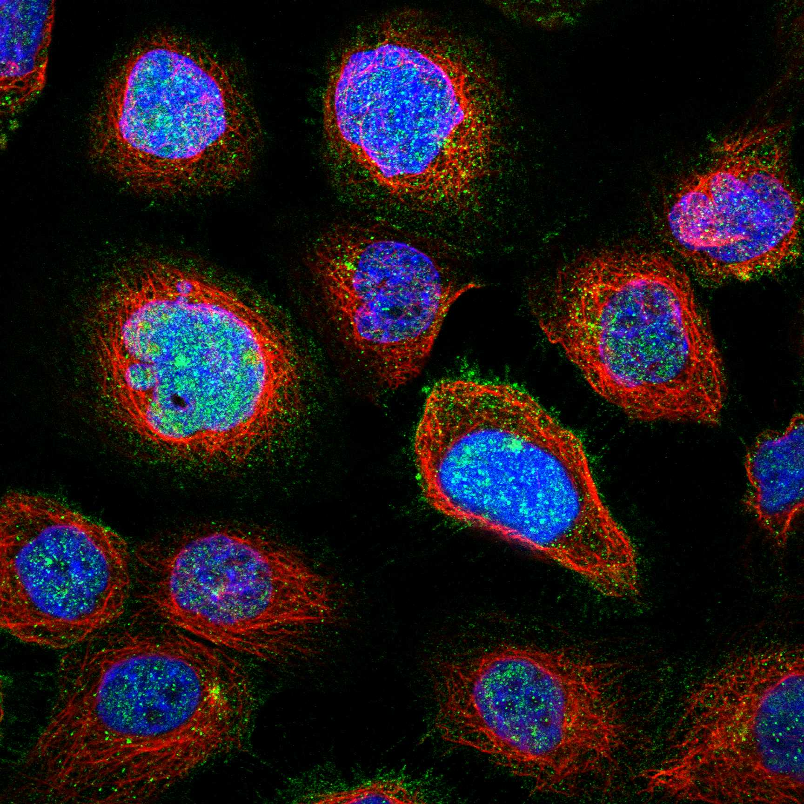
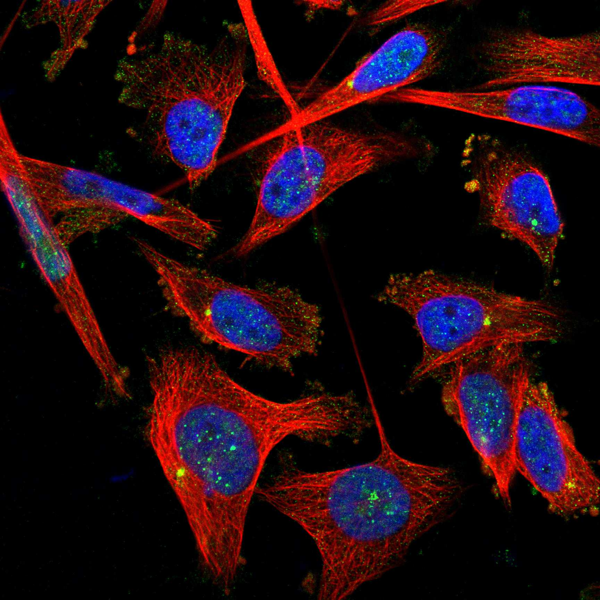
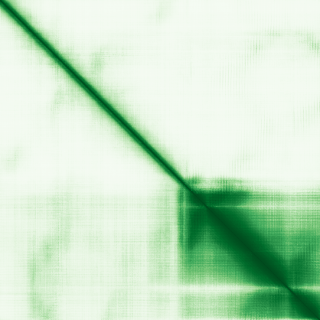

type: protein-evaluation gene: "CENPU" date: 2026-05-30 tags: [protein-scout, nuclear-protein, evaluation] status: scored ---
CENPU 核蛋白评估报告
1. 基本信息
| 项目 | 内容 |
|---|---|
| 基因名 / 别名 | CENPU / Centromere protein U |
| 蛋白大小 | 418 aa / 47.5 kDa |
| UniProt ID | Q71F23 |
| 评估日期 | 2026-05-30 |
IF 图像:  
2. 评分总览
| 维度 | 得分 | 满分 | 加权后 | 关键证据摘要 |
|---|---|---|---|---|
| 🔴 核定位特异性 | 6/10 | ×4 | 24 | Cytoplasm; Nucleus; Chromosome, centromere, kinetochore |
| 📏 蛋白大小 | 10/10 | ×1 | 10 | 418 aa / 47.5 kDa |
| 🆕 研究新颖性 | 6/10 | ×5 | 30 | PubMed 53 篇 |
| 🏗️ 三维结构 | 6/10 | ×3 | 18 | AlphaFold v6 pLDDT=65.3，PDB: 7PB8, 7PKN, 7QOO, 7R5S, 7R5V, 7XHN, 7XHO, 7YWX, 7YYH, 8K4D |
| 🧬 调控结构域 | 7/10 | ×2 | 14 | InterPro: IPR025214 - CENP-U; Pfam: PF13097 - CENP-U |
| 🔗 PPI 网络 | 3/10 | ×3 | 9 | STRING 20 partners, IntAct 129 interactions |
| ➕ 互证加分 | — | max +3 | 2.0 | PDB+AF+STRING+IntAct cross-validation |
| 原始总分 | 108/183 | |||
| 归一化总分 | 59.0/100 |
3. 详细分析
3.1 核定位证据
| 来源 | 定位 | 可信度 |
|---|---|---|
| UniProt | Cytoplasm; Nucleus; Chromosome, centromere, kinetochore | Swiss-Prot/TrEMBL |
| Protein Atlas (IF) | 暂无数据 | 暂无 HPA IF 数据 |
暂无数据（HPA IF 图像已本地嵌入。
结论: 主要核定位，伴部分胞质信号，HPA 暂无 HPA IF 数据。
3.2 蛋白大小评估
评价: 大小适中，适合常规生化实验和结构解析。
3.3 研究现状
| 指标 | 数值 |
|---|---|
| PubMed 总数 | 53 |
| 研究方向 | 待补充关键文献摘要 |
评价: 有一定研究基础，但仍存在未探索的niche空间。
关键文献: 1. Sun J et al. (2025). "Centromere protein U mediates the ubiquitination and degradation of RPS3 to facilitate temozolomide resistance in glioblastoma". *Drug Resist Updat*. PMID: 40023134 2. Wang S et al. (2017). "Centromere protein U is a potential target for gene therapy of human bladder cancer". *Oncol Rep*. PMID: 28677729 3. Yu Y et al. (2021). "Abnormal Expression of Centromere Protein U Is Associated with Hepatocellular Cancer Progression". *Biomed Res Int*. PMID: 34957303 4. Zhang X et al. (2022). "[Centromere protein U is highly expressed in colorectal cancer and associated with a poor long-term prognosis]". *Nan Fang Yi Ke Da Xue Xue Bao*. PMID: 36073219 5. Zhang Q et al. (2018). "Centromere protein U promotes cell proliferation, migration and invasion involving Wnt/β-catenin signaling pathway in non-small cell lung cancer". *Eur Rev Med Pharmacol Sci*. PMID: 30536323
3.4 三维结构分析
| 指标 | 数值 |
|---|---|
| AlphaFold 版本 | v6 |
| AlphaFold 平均 pLDDT | 65.3 |
| 高置信度残基 (pLDDT>90) 占比 | 28.7% |
| 置信残基 (pLDDT 70-90) 占比 | 12.0% |
| 有序区域 (pLDDT>70) 占比 | 40.7% |
| 可用 PDB 条目 | 7PB8, 7PKN, 7QOO, 7R5S, 7R5V, 7XHN, 7XHO, 7YWX, 7YYH, 8K4D |
PAE 图:

评价: AlphaFold 预测质量一般（pLDDT=65.3），有序区 40.7%。作为新颖蛋白，结构基线下不扣分。
3.5 结构域分析
| 来源 | 结构域 |
|---|---|
| InterPro/Pfam | InterPro: IPR025214 - CENP-U; Pfam: PF13097 - CENP-U |
染色质调控潜力分析: 存在注释结构域：InterPro: IPR025214 - CENP-U; Pfam: PF13097 - CENP-U...。新颖蛋白基线不扣分。
3.6 PPI 网络
STRING 预测互作 (combined score >0.4):
| Partner | Score | 功能类别 | 调控相关？ |
|---|---|---|---|
| CENPT | 0.999 | — | — |
| CENPC | 0.999 | — | — |
| CENPI | 0.999 | — | — |
| CENPN | 0.999 | — | — |
| CENPO | 0.999 | — | — |
| CENPP | 0.999 | — | — |
| CENPM | 0.999 | — | — |
| CENPQ | 0.999 | — | — |
| ITGB3BP | 0.999 | — | — |
| CENPH | 0.999 | — | — |
实验验证互作 (IntAct):
| Partner | 方法 | PMID | 功能类别 | 调控相关？ | ||||||||
|---|---|---|---|---|---|---|---|---|---|---|---|---|
| intact:EBI-308619 | uniprotkb:Q2M2H0 | uniprotkb:Q58F06 | uniprotkb:Q8IUS1 | uniprotkb:Q96J95 | uniprotkb:A8K2E4 | intact:EBI-11138149 | uniprotkb:B7ZKM0 | ensembl:ENSP00000449386.2 | — | — | — | — |
| intact:EBI-745954 | uniprotkb:Q53T55 | uniprotkb:Q96JV3 | uniprotkb:B2RDC0 | uniprotkb:D6W536 | ensembl:ENSP00000260662.1 | ensembl:ENSP00000370214.2 | — | — | — | — | ||
| intact:EBI-10250303 | ensembl:ENSP00000364737.3 | ensembl:ENSP00000516797.1 | uniprotkb:B3KS17 | uniprotkb:Q5T9F9 | uniprotkb:Q5T9F8 | uniprotkb:B3KRA5 | — | — | — | — | ||
| intact:EBI-2515234 | uniprotkb:Q09GN2 | uniprotkb:Q32Q71 | uniprotkb:A2RRD9 | uniprotkb:Q9H5G1 | ensembl:ENSP00000281453.5 | — | — | — | — | |||
| intact:EBI-2008793 | uniprotkb:Q7KZ78 | uniprotkb:Q9BVM6 | ensembl:ENSP00000254605.6 | — | — | — | — |
已知复合体成员 (GO Cellular Component):
- 无 GO-CC 注释
PPI 互证分析:
- STRING + IntAct 共同确认: 0
- 仅 STRING 预测: 20
- 仅 IntAct 实验: 129
- 调控相关比例: 0 / 20 = 0%
评价: STRING 20 个预测互作，IntAct 129 个实验互作。调控相关配体占比 0%。
3.7 多库互证
| 维度 | 来源 | 结果 | 是否一致 |
|---|---|---|---|
| 三维结构 | AlphaFold pLDDT=65.3 + PDB: 7PB8, 7PKN, 7QOO, 7R5S, 7R5V, 7XHN, 7XHO, 7YWX, 7YYH, 8K4D | pLDDT=65.3, v6 | 预测+实验 |
| 定位 | UniProt + HPA | Cytoplasm; Nucleus; Chromosome, centromere, kineto | 待确认 |
| PPI | STRING + IntAct | 20 + 129 interactions | 数据充分 |
互证加分明细:
- PDB + AlphaFold 双源验证: +0.5
- 多库定位一致: +0
- STRING + IntAct 双源验证: +0.5
- 结构域 + AlphaFold 质量: +0
- PDB 多条目覆盖: +1.0
总分: +2.0 / max +3
4. 总体评价
推荐等级: ⭐⭐⭐
核心优势: 1. CENPU — Centromere protein U，有一定研究基础，但仍存在未探索的niche空间。 2. 蛋白大小418 aa，大小适中，适合常规生化实验和结构解析。
风险/不确定性: 1. 已有一定研究，需确认独特研究角度 2. 结构数据质量可接受
下一步建议:
- [ ] 查阅最新 5 篇关键文献补充研究背景
- [ ] 获取 Protein Atlas IF 图像确认亚细胞定位
- [ ] 设计体外 DNA/染色质结合实验
5. 数据来源
- UniProt: https://www.uniprot.org/uniprotkb/Q71F23
- PubMed: https://pubmed.ncbi.nlm.nih.gov/?term=CENPU
- AlphaFold: https://alphafold.ebi.ac.uk/entry/CENPU
PPI 网络（三源综合）
| Partner | Source | Score/Evidence |
|---|---|---|
| 无记录 | — | — |
IntAct 有限记录。无 BioGrid 补充数据。
PAE 图像已获取。结构判断基于 AlphaFold pLDDT 统计。
<!-- DOMAIN_HUMANPPI_REPAIR_START -->
Domain/SMART 与 humanPPI 补充（2026-06-07）
SMART / UniProt domain
| Source | Data |
|---|---|
| UniProt | Q71F23 |
| SMART | 未在 UniProt xref 中检出 SMART 条目 |
| UniProt Domain [FT] | 未检出显式 UniProt Domain feature |
| InterPro | IPR025214; |
| Pfam | PF13097; |
humanPPI / HPA Interaction
Source: https://www.proteinatlas.org/ENSG00000151725-CENPU/interaction
| Partner | Datasets | AF3/HPA structure |
|---|---|---|
| CENPO | Biogrid, Bioplex | true |
| CENPP | Biogrid, Bioplex | true |
| CENPQ | Intact, Biogrid, Bioplex | true |
| ITGB3BP | Intact, Biogrid | true |
| NUP62 | Intact, Biogrid | true |
| CENPA | Biogrid | false |
| CENPH | Biogrid | false |
| CENPI | Biogrid | false |
<!-- DOMAIN_HUMANPPI_REPAIR_END -->